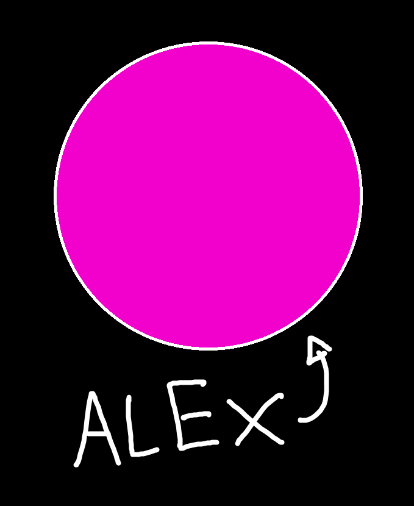

CHILL
IL GIOCO THE GAME
Cos'è Chill? What is Chill?

Chill è un gioco molto semplice.
Te controlli una palla chiamata "Alex", che deve muoversi in un labirinto per raggiungere l'uscita.
A discapito di quanto potrebbe suggerire il nome, il gioco non è molto rilassante. Anzi, è progettato per essere il più frustrante possibile.
Ma cosa lo rende fastidioso?
Chill is a very simple game.
You control a ball called "Alex", navigating a maze to reach the exit.
Despite what the name might suggest, the game is not particularly relaxing. On the contrary, it is designed to be quite frustrating.
But what makes it so annoying?
I Controlli The Controls
Alex è affetto da gravità, che lo spinge costantemente verso il basso, ma può saltare a destra o sinistra con i tasti A e D (o con le frecce a destra e sinistra).
Ogni volta che salta, Alex guadagna della quota che gli permette di non cadere.
Controllare Alex con precisione è importante, perché toccare un qualsiasi muro ti riporterà all'inizio del livello.
Alex is affected by gravity, pulling him constantly down. He can fight this by jumping left and right with the A and D keys (or with the arrow keys).
With each jump Alex gains some altitude that will help him not to fall, but which might also send him into a wall.
Controlling Alex well is important, as touching any of the walls will cost him a life, and send him back to the start of the level.
Multitasking
Quando si gioca Chill è importante riuscire a mantere Alex in vita mentre si risolve il labirinto a mente. Altrimenti si potrebbero finire le 3 vite che si hanno a disposizione.
Una nuova vita è guadagnata ogni tre livelli superati, ma i labirinti diventano gradualmente più difficili.
When playing Chill it is important to keep Alex alive while mentally solving the maze. Otherwise you might lose all 3 of your lives.
One extra life is awarded each three completed levels, but the mazes get gradually larger and harder to navigate.
GIOCA PLAY
ALTRE IDEE MORE IDEAS
Altre idee e aggiunte potrebbero essere Further ideas and improvements could be
- Vite extra da raccogliere nei livello Extra lives to be collected throughout the levels
- Collezionabili che diano punti extra nei livelli Collectables that award extra points
- Collezionabili che devono essere raccolti prima di poter andare all'uscita Keys that need to be collected before reaching the exit
- Aggiungere una scoreboard Implementing a global scoreboard
- Ridurre il campo visivo del giocatore Reducing the player's field of view
Forse un giorno tornerò su questo progetto e implementerò queste idee. Maybe one day I'll return on this project to expand it with new ideas.